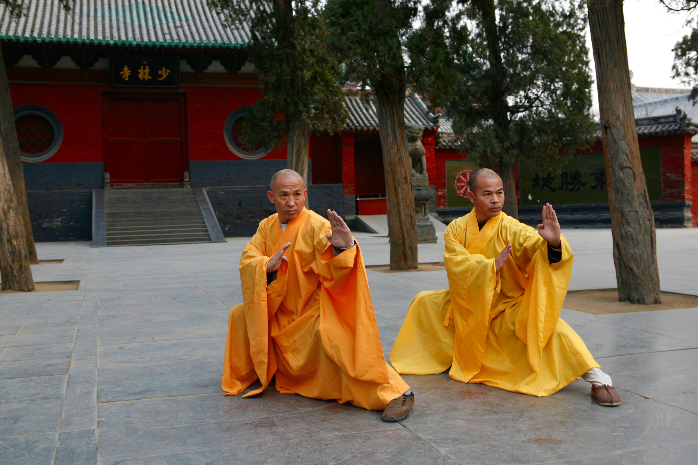
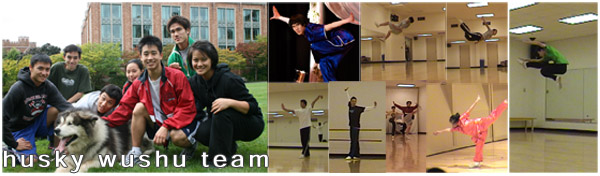

"Shi DeRu and Shi DeYang" by Shi Deru (a.k.a. Shawn Xiangyang Liu) - http://www.free-press-release.com/news-summer-camp-with-24-7-residence-kungfu-life-style-excellence-like-training-at-the-shaolin-temple-1335901927.html. Licensed under CC BY-SA 3.0 via Wikipedia.{kind=link}
Wushu (simplified Chinese: 武术; traditional Chinese: 武術) is both an exhibition and a full-contact sport derived from traditional Chinese martial arts.[1][2] It was developed in China after 1949, in an effort to standardize the practice of traditional Chinese martial arts,[3] although attempts to structure the various decentralized martial arts traditions date back earlier, when the Central Guoshu Institute was established at Nanking in 1928. The term wushu is Chinese for "martial arts" (武 "Wu" = military or martial, 术 "Shu" = art). In contemporary times, wushu has become an international sport through the International Wushu Federation (IWUF), which holds the World Wushu Championships every two years; the first World Championships were held in 1991 in Beijing and won by Yuan Wen Qing.[4]
our background - UW and seattle wushu
the husky wushu team was created because the UW needed a group to represent wushu among the other more visible martial arts groups. the seattle wushu scene is small and fragmented, and people have few options for places to learn wushu and connect with other wushu players. by having an official collegiate club, we're better able to create an environment for the transmission of wushu knowledge allowing people with similar interests to connect and guide the development of wushu in seattle.
wushu practice at the UW has largely been an underground thing, only known about by a few dedicated practitioners. the yue fei wushu club was the earliest known group to practice wushu at UW. the members were experienced and learned wushu from prominent local teachers like hong yijao, former zhejiang wushu team member; mark jackson, former british national team member; and michael li. at their height in 2004, they had as many as 20 members practicing at the IMA. but they never became official, and major obstacles caused the group to eventually dissipate to just a few dedicated athletes.
the next UW wushu group was another unofficial fledgling group that represented the small wushu population in seattle. weekly practices rarely had more than 3 people, but this routine set the stage for the creation of the current wushu club as the group gained more interested practitioners and participated at several large performances and competed at tournaments.
we are now a larger group that practices regularly at the IMA. we also regularly perform for UW student organizations and also many other non-UW organizations within seattle. we also compete at the annual collegiates competition against other universities, along with the annual CMAT competition at UC Berkeley, the largest chinese martial arts competition in the the United States.
UW wushu 2007-2008 - husky wushu team
we made our debut at the 16th Annual Chinese Martial Arts Tournament hosted by UC Berkeley. freshman priscilla dang won 3rd place in the women's advanced longfist division and 1st in advanced other weapon. junior and team captain travis dang won 1st place in the men's advanced longfist division. we'll be back next year for more medals.
not only do we practice wushu, we teach a children's wushu class at chinese school on saturdays. it's a chance for us to spread interest in wushu even farther, inspire the next generation of wushu athletes, and give back to the community.
in the future, we hope to become a club sport at UW, offer formal wushu classes coached by li tianyuan, and become a contributing part to the development of US wushu. currently, we're working on our fundamentals, the basic techniques and conditioning, getting our team organized for upcoming demos and performances, and having fun at the same time.